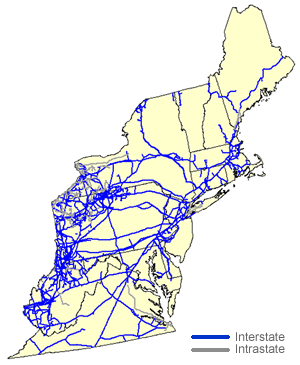

|
About U.S. Natural Gas Pipelines - Transporting Natural
Gas
based on data through 2007/2008 with selected updates |
||||||||||||||||||||||||||||||||||||||||||||||||||||||||||||||||||||||||||||||||||||||||||||||||||||||||||
|---|---|---|---|---|---|---|---|---|---|---|---|---|---|---|---|---|---|---|---|---|---|---|---|---|---|---|---|---|---|---|---|---|---|---|---|---|---|---|---|---|---|---|---|---|---|---|---|---|---|---|---|---|---|---|---|---|---|---|---|---|---|---|---|---|---|---|---|---|---|---|---|---|---|---|---|---|---|---|---|---|---|---|---|---|---|---|---|---|---|---|---|---|---|---|---|---|---|---|---|---|---|---|---|---|---|---|
|
Overview
The natural gas pipeline and local distribution companies serving the Northeast have access to supplies from several major domestic natural gas producing areas and from Canada. Domestic natural gas flows into the region from the Southeast into Virginia and West Virginia, and from the Midwest into West Virginia and Pennsylvania. Canadian imports come into the region principally through New York, Maine, and New Hampshire. Liquefied natural gas (LNG) supplies also enter the region through import terminals located in Massachusetts, Maryland, and New Brunswick, Canada. Almost all of the interstate natural gas pipelines entering or operating within the Northeast Region terminate there as well, including several very large long-distance natural gas pipeline systems that deliver supplies to the region from natural gas producing areas in the U.S. Southwest. The largest of these natural gas pipelines is the Transcontinental Gas Pipeline Company system (8.5 billion cubic feet (Bcf) per day systemwide), which extends from South Texas to the New York City area. The Tennessee Gas Pipeline Company (6.7 Bcf per day) and Texas Eastern Transmission Company (7.3 Bcf per day) natural gas pipeline systems bring supplies to the Northeast from Texas, Louisiana, and the Gulf of Mexico. The Tennessee Gas Pipeline Company system, unlike the Transcontinental Gas Pipeline Company and Texas Eastern Transmission Company systems, extends its service northward as far as New Hampshire and is a major transporter of natural gas to Connecticut, Massachusetts, and Rhode Island. (Note: The Texas Eastern Transmission Company system was the first natural gas pipeline system to extend from the Southwest to the Northeast Region with the conversion of the "Big-inch" and "Little Big-inch" oil pipelines shortly after World War II.) The Tennessee Gas Pipeline Company system is also a significant source of supply for the regional Algonquin Gas Transmission Company system, which is the principal interstate natural gas pipeline serving the Boston, Massachusetts area. The Texas Eastern Transmission Company, an affiliate of the Algonquin Gas Transmission Company, is the primary source of supply for that pipeline, delivering approximately 65 percent of Algonquin’s requirements at interconnections in New Jersey. The Algonquin Gas Transmission Company system (1,100 miles) has the capability to move 1.5 Bcf per day of its 3.3 Bcf per day system capacity from New Jersey into the New York metropolitan area. |
Northeast Region Natural Gas Pipeline Network

|
|||||||||||||||||||||||||||||||||||||||||||||||||||||||||||||||||||||||||||||||||||||||||||||||||||||||||
The Algonquin Gas Transmission Company is also the recipient of 0.8 Bcf per day of natural gas processed at the Northeast Gateway liquefied natural gas (LNG) import terminal (installed in late 2008) located 10 miles offshore of Massachusetts. The Northeast Gateway port's infrastructure features two submerged turret loading buoys for off loading. The operation is linked to the Algonquin Gas Transmission Company system by a 16-mile submereged pipeline. It is the first new LNG terminal built on the East Coast in 30 years. The largest interstate natural gas pipeline system operating in the region is Columbia Gas Transmission Company (9.4 Bcf per day capacity). Columbia has an extensive network of natural gas pipelines that provide service in the region to the States of Maryland, New Jersey, New York, Pennsylvania, Virginia, and West Virginia, but also extends into Ohio in the Midwest and Kentucky and North Carolina in the Southeast Region. Columbia receives Gulf-of-Mexico natural gas at the Kentucky border from its major trunkline transporter, Columbia Gulf Transmission Company, but it also transports Appalachian (regional) production as well. In late 2008, the long-delayed 0.5 Bcf per day Millennium Pipeline was finally completed. This 182-mile natural gas pipeline system begins at an interconnect with the Empire Pipeline system in southwest central New York State and terminates in the New York City metropolitan area. It is part of an overall regional effort involving expansion of the existing Empire, Algonquin and Iroquois Pipelines, which will be among its major supply sources. The Dominion Transmission Company system, although not as extensive as the Columbia Gas Transmission Company system, serves the same States, except for New Jersey. Neither interstate pipeline, however, extends service to the New England States. Both companies are also the major suppliers of some of the largest LDCs in the region, some of which are affiliates. In addition to the interstate natural gas pipeline companies that bring natural gas into the region, several smaller interstate natural gas pipeline companies operate totally within the region. Among these are systems such as Equitrans Inc. (0.1 Bcf per day), serving West Virginia and western Pennsylvania, that were developed to move local production to regional markets. West Virginia, western Pennsylvania, and southwestern New York were once the region's and the Nation's largest natural gas producing areas and, consequently, have many local gathering, distribution, and storage interconnections. These local facilities also have many interconnections with natural gas pipeline operations in Ohio, which is the reason for the 2.1 Bcf per day of capacity exiting the region to the Midwest. Some of these smaller interstate and intrastate natural gas pipelines serve niche areas within the region. For instance, Eastern Shore Natural Gas Company (0.1 Bcf per day) is the only natural gas pipeline serving southern Delaware and the lower Delmarva Peninsula. It receives its supplies from Transcontinental Gas Pipeline Company and Columbia Gas Transmission Company at points in southeastern Pennsylvania, with a route that takes it southward through Delaware to Maryland's eastern shore. Further to the north, Granite State Transmission Company (0.1 Bcf per day) receives natural gas from the Tennessee Gas Pipeline Company and/or the PNGTS/Maritimes and Northeast Pipeline system at the southern New Hampshire/Massachusetts border. From there it transports to customers in New Hampshire and to the Northern Utilities Company system -- which has been the historical source of natural gas for the southern portion of the State of Maine. While the KeySpan Energy Delivery Company is the principal provider of natural gas service to New York City and Long Island, New York, its intrastate operations now also include service in Massachusetts and New Hampshire as well. Importance of Canadian Imports to the Region During the past 17 years (1990-2005), several new natural gas pipelines were built that substantially increased regional access to Canadian natural gas supplies. The Iroquois Gas Transmission Company system, completed in 1991, draws just over one Bcf per day off the TransCanada Pipeline Ltd system in Ontario, Canada, a large portion of which is delivered to the New York City metropolitan area. The Empire Pipeline Company system (0.7 Bcf per day), built in 1994, and an intrastate affiliate of National Fuel Gas Supply Corporation, brings in Canadian natural gas at Grand Island, New York (near Niagara Falls) to north central New York State with interconnections to the Dominion Transmission Company and National Fuel Gas Supply Corporation systems. These latter two companies also access Canadian supplies via Tennessee Gas Pipeline, which maintains a 0.9 Bcf per day import point at Niagara Falls, New York. [Map and Table of Import/Export Points] Moreover, in 2000, the Portland Natural Gas Transmission System (PNGTS), which begins at the northern neck of New Hampshire and extends to the coast of Maine, was completed. PNGTS merges with the Maritimes and Northwest Pipeline system at Wells, Maine, where they form a joint 100-mile, 0.6 Bcf per day, natural gas pipeline that extends south through southern New Hampshire and terminates in northern Massachusetts (with an interconnection to the Tennessee Gas Pipeline Company system). In 2003, PNGTS, originally designed only to import natural gas (into New Hampshire), was reconfigured to provide bidirectional service to its customers. The objective of the reconfiguration was to provide shippers of Canadian Sable Island natural gas, which use the Maritimes & Northeast Pipeline Company system, with an opportunity to redirect some of their natural gas to markets located in Quebec (which previously had access only to western Canadian natural gas supplies). The U.S. portion of the Maritimes and Northeast Pipeline Company (0.8 Bcf per day) system begins at Calais, Maine, at the Canadian border and extends to Wells, Maine. The full 730-mile Maritimes and Northeast Pipeline system (343 miles of which are in the U.S.) was built to access natural gas production off the eastern coast of Canada (Sable Island) and to transport it to New England. In late 2003, the Maritimes and Northeast Pipeline Company system was extended from Dracut to Boston, Massachusetts, providing an additional 0.2 Bcf per day of service to that metropolitan area. In 2008, its system was also expanded to transport an additional 0.4 Bcf per day of natural gas, processed at the new Canaport liquefied natural gas (LNG) import terminal located in New Brunswick, Canada, to New England markets. Several smaller regional natural gas importing pipelines, such as North County Pipeline Company (0.6 Bcf per day) and the St. Lawrence Gas Company (0.1 Bcf per day), both located in upper New York State, and the Vermont Gas Systems Company (0.05 Bcf per day), the only natural gas pipeline in the State of Vermont, depend upon Canadian natural gas imports completely for their natural gas supplies since they do not interconnect with any other U.S. natural gas pipeline. |
||||||||||||||||||||||||||||||||||||||||||||||||||||||||||||||||||||||||||||||||||||||||||||||||||||||||||
| Principal Natural Gas Pipeline Companies Serving the Northeast Region
with links to pipeline web sites
|
||||||||||||||||||||||||||||||||||||||||||||||||||||||||||||||||||||||||||||||||||||||||||||||||||||||||||
{kind=link}